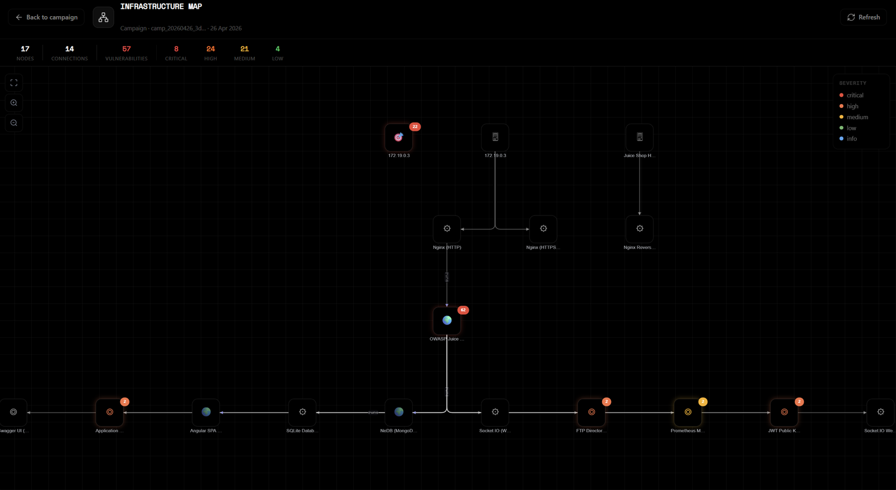

Un marché à +15 %/an. Pour les équipes sécurité, les pipelines DevSecOps, le bug bounty, la recherche et la formation.

50 sous-agents dans conf/agents, déclenchés sur la technologie réellement détectée, jamais sur une inférence.
Couverture par plan
Ouverture
GPLv3, auditable de bout en bout.
Souveraineté IA
Claude, une IA européenne, ou un modèle qui ne sort jamais de chez vous.
Données
Les valeurs sensibles sont remplacées avant l'appel au modèle.